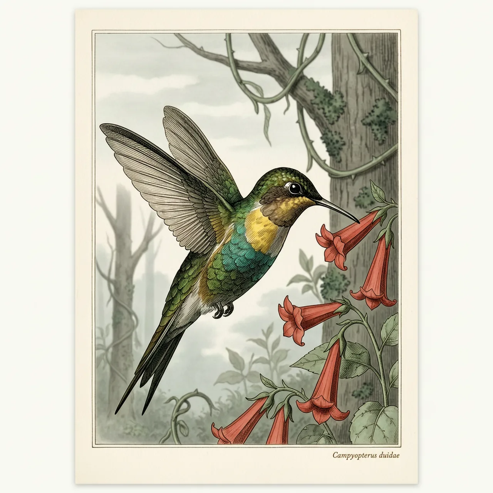
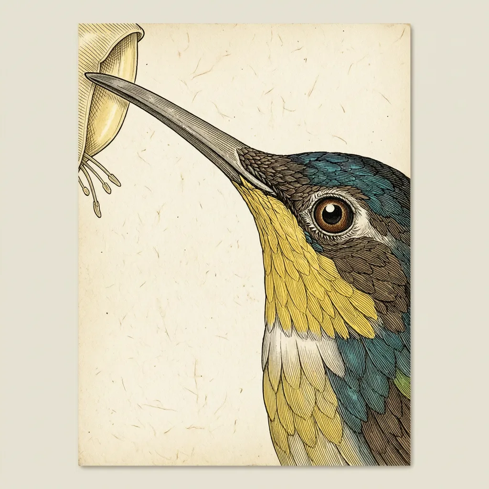

黄胸刀翅蜂鸟体重约6.05克，全年停在委内瑞拉与巴西交界的高地云雾林里，靠花蜜活着。它的嘴峰长28毫米，尾长46.4毫米，外侧初级飞羽在属内特化得像收拢的镰刀。雄鸟求偶展示俯冲时，声音来自翅膀与气流，而不是喉咙。
委内瑞拉与巴西交界的高地上，云雾林的树冠又密又高，黄胸刀翅蜂鸟就住在这样的森林里，一年到头不迁移。它在分布区内是留鸟：山头的花一轮接一轮地开，不用跑远就有持续的花蜜可取。它的已知分布很窄，只见于这片高地，山下低地的森林里反而找不到它。
黄胸刀翅蜂鸟靠花蜜活着。6.05克的身体上长着28毫米的嘴峰，喙宽只有2.4毫米、厚2.6毫米，是一根细长的探针，能伸进筒状花的花冠深处取食；嘴短的蜂鸟够不着的那些花，对它来说是空着的食物。取食时它悬停，靠高频率振翅把自己定在一朵花前面。46.4毫米的长尾配6.2毫米的跗蹠，是刀翅蜂鸟属典型的身形。
最后一点最容易被忽略：黄胸刀翅蜂鸟展示时的声音不是从喉咙里出来的。刀翅蜂鸟属的雄鸟在求偶展示中俯冲，气流掠过特化的外侧初级飞羽，这些羽毛比其他羽更宽、更弯，像收拢的镰刀，在气流里振动发声，翅膀本身就是发声器。雌鸟没有这种特化羽，也听不到这套声音。
